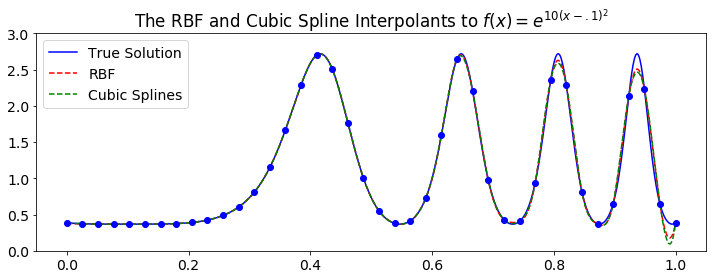
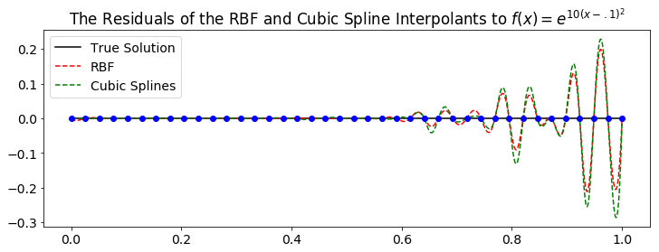

We discussed some details of interpolation in one dimension and the benefits of various forms of interpolants. We reviewed Daniel's code for semi-Lagrangian advection and discussed how it can be addapted to use RBF interpolation.
- Sage's Tasks
- Code
- Research
- Writing
- Misc
- One Dimensional Interpolation
- Meeting Followup
- References
Sage's Tasks
Code
Fix calculation of eigenvalue with largest real component.- Implement the RBF Symmetric OGr method.
- Implement time-stepping.
- Improve performance of the high order OGr method.
- Test RBF OGr interpolation.
- Compare speed of Numpy, MATLAB, and C++.
Research
- Research the Skeel Condition Number[1].
- Research sphereical harmonics.
- Research the Eigen and Armadillo libraries for C++.
- Research and use BLAS libraries.
Writing
- Write the theorem for exactness.
- Write RBF-FD article.
- Write RBF-FD Projection Method article.
- Write RBF-OGr article.
Write Numpy Efficiency article.(matrx of vectors)- Python+Numpy Loops Experiment
- Add local approximation to RBF Interpolation article.
Misc
- Select PhD programs.
- Get access to a server.
One Dimensional Interpolation
Sage had observed that for equally spaced points in one dimension, RBF interpolation seems to do worse than cubic-spline interpolation (see the plots below). Grady and Varun confirmed that this is expected behaviour and that RBF alone will usually do worse than cubic splines for one dimensional problems especially with equally spaced points.
 They also said that the Chebyshev points will minimize the max norm error for polynomial interpolation, and that the Legendre points will minimize the $L^2$ norm error for polynomial interpolation. Additionally, in 2005 Plate related RBF interpolation using gaussians on equally spaced points in one dimension back to polynomial interpolation to make conclusions about convergence and stability[2]. Grady coauthored a paper relating the third degree PHS to cubic interpolation that addresses the extreme error at the boundaries known as Runge phenomenon[3].
Lastly they noted that if one can choose the sample points for a one dimensional problem, then polynomial interpolation over the Chebyshev points will provide the best approximation.
The Role of $\boldsymbol{\varepsilon}$
In the meeting followup for the previous meeting Sage provided a plot showing convergence of RBF interpolation using the gaussian with $\varepsilon$ optimized for the first stencil on the finest nodeset. In these trials the RBF matrices were not augmented with polynomial basis terms. The question is, when augmenting with polynomial basis terms what is the role of $\varepsilon$? Does it provide accuracy? Does it provide stability? What effect does it have on the eigenvalues of the finite difference matrix?
Meeting Followup
References
- Nicholas J. Higham. Accuracy and Stability of Numerical Algorithms. University of Manchester, 2002. URL: https://epubs.siam.org/doi/abs/10.1137/1.9780898718027.fm, arXiv:https://epubs.siam.org/doi/pdf/10.1137/1.9780898718027.fm, doi:10.1137/1.9780898718027.fm.
- Rodrigo B. Platte and Tobin A. Driscoll. Polynomials and potential theory for gaussian radial basis function interpolation. SIAM Journal on Numerical Analysis, 43(2):750–766, 2006. URL: http://www.jstor.org/stable/4101422.
- B Fornberg, G. B. Wright, and E Larsson. Some observations regarding interpolants in the limit of flat radial basis functions. Comput. Math. Appl., 47:37–55, 2004. URL: https://math.boisestate.edu/~wright/research/rbf_paper_final.pdf.